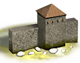
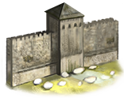
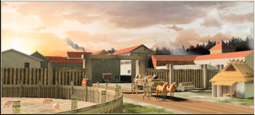
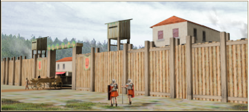
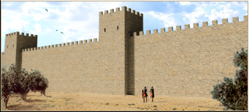
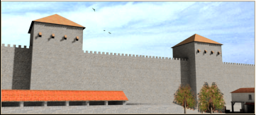
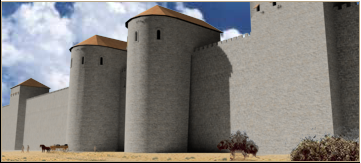

RTR: Imperium Surrectum
RTR: Imperium SurrectumWalls
5 levels, each replacing the one before it — you upgrade in place rather than building alongside.
Wooden Palisade → Small Stone Wall → Stone Wall → Large Stone Wall → Epic Stone Wall
Levels at a glance
| Level | Cost | Build time | Minimum settlement | Upgrades to | Level | Cost | Build time | Minimum settlement | Upgrades to | ||
|---|---|---|---|---|---|---|---|---|---|---|---|
| Wooden Palisade | 1,800 | 4 | town | Small Stone Wall | Small Stone Wall | 3,000 | 6 | large town | Stone Wall | ||
| Stone Wall | 8,000 | 8 | city | Large Stone Wall |  | Large Stone Wall | 12,000 | 10 | large city | Epic Stone Wall | |
 | Epic Stone Wall | 18,000 | 12 | huge city | — |
Costs in denarii, build time in turns.
Wooden Palisade

A wall of logs around a settlement gives a comforting sense of security, but it cannot delay attackers for very long. It's enough to keep livestock from straying at night. That said a palisade like this is cheap and easy to erect even for an unskilled work force. It will help make a settlement feel like a homely place where people live, work and prosper.
| Cost | 1,800 denarii | Build time | 4 turns | Minimum settlement | town | Upgrades to | Small Stone Wall |
Requirements — all of these must hold before this level can be built.
- Government Building (Dependency, Indirect Rule, Direct Rule or Homeland)
What it does
- walls at level 0
- towers at level 1
- -3 taxable income
Small Stone Wall

A rough wooden wall is a better defence than a crude palisade, but it is not likely to present much of a problem to attackers.
Relatively easy to construct with a skilled workforce, this minor stone wall offers a modest but reliable protection, combining mortared stonework with timber reinforcements. While not as imposing as true stone fortifications, these defenses will slow down all but the most determined attackers. Raiders and opportunistic forces will find them a serious obstacle, but a well-equipped army with siege equipment will, however, break the wall down sooner rather than later.
These walls represent a settlement's growing prosperity, a step beyond simple wooden barriers toward proper fortifications. The stonework, though basic, keeps locals and their livestock safe at night and gives a sense of permanence to a town. Improving the walls also adds grain stores to extend the time a settlement can resist a siege.
| Cost | 3,000 denarii | Build time | 6 turns | Minimum settlement | large town | Upgrades to | Stone Wall |
Requirements — all of these must hold before this level can be built.
- Government Building (Dependency, Indirect Rule, Direct Rule or Homeland)
What it does
- walls at level 1
- gate strength 1
- towers at level 1
- -6 taxable income
Show 1 effect that apply only in some circumstances
- +1 public order (law) — only when the "Settlement condition" campaign setting is on
Stone Wall

Stone walls are fairly substantial and give a degree of security to a town, but truly determined attackers will be able to breach them.
Stone walls are fairly substantial but truly determined attackers will be able to breach them. With towers and gatehouses, these are formidable defences but not completely impregnable.
The need for security - and Roman pride - will mean that stone walls are desirable. These are defences that can protect the local people and offer protection to rural folk who flee from raiders. Improving the walls also adds grain stores to extend the time a settlement can resist a siege.
| Cost | 8,000 denarii | Build time | 8 turns | Minimum settlement | city | Upgrades to | Large Stone Wall |
Requirements — all of these must hold before this level can be built.
- Government Building (Dependency, Indirect Rule, Direct Rule or Homeland)
What it does
- walls at level 2
- towers at level 1
- gate defences 1
- gate strength 1
- -9 taxable income
Show 1 effect that apply only in some circumstances
- +1 public order (law) — only when the "Settlement condition" campaign setting is on
Large Stone Wall

Large walls are substantial, and even organised enemies will have a hard time scaling them or breaking into the city.
Large stone walls are substantial with strong towers and gatehouses. Even organised enemies will have a hard time scaling them or breaking into the city and will need time and specialised siege equipment to succeed.
Improving the walls also adds grain stores to extend the time a settlement can resist a siege. The wall is, however, expensive and time consuming to construct. Usually only prestigious or rich towns are worth protecting, they are monuments to the governors who build them!
| Cost | 12,000 denarii | Build time | 10 turns | Minimum settlement | large city | Upgrades to | Epic Stone Wall |
Requirements — all of these must hold before this level can be built.
- You play a Phoenician, Iberian, Libyan, Caucasian, Anatolian, Iranian, Arab, Ethiopian, Indian, Egyptian, Greek, Western Hellenistic, Eastern Hellenistic or Roman faction
- Government Building (Dependency, Indirect Rule, Direct Rule or Homeland)
What it does
- walls at level 3
- towers at level 1
- gate defences 2
- gate strength 2
- -13 taxable income
Show 1 effect that apply only in some circumstances
- +2 public order (law) — only when the "Settlement condition" campaign setting is on
Epic Stone Wall

These awesome walls will present all attackers with an apparently impregnable barrier when assaulting a protected city.
These awesome walls are an extremely strong array of towers, gatehouses and battlements. They are difficult to breach - almost impossible without the right equipment - and a severe stumbling block to the plans of any conqueror. Raiding armies will sometimes turn back rather than futilely waste their time in front of such defences!
Improving the walls also adds grain stores to extend the time a settlement can resist a siege. Construction of these walls is slow and immensely expensive, making them unlikely to be used except to protect capitals and cities of enormous wealth and importance.
| Cost | 18,000 denarii | Build time | 12 turns | Minimum settlement | huge city |
Requirements — all of these must hold before this level can be built.
- You play a Phoenician, Iberian, Libyan, Caucasian, Anatolian, Iranian, Arab, Ethiopian, Indian, Egyptian, Greek, Western Hellenistic, Eastern Hellenistic or Roman faction
- Government Building (Dependency, Indirect Rule, Direct Rule or Homeland)
What it does
- walls at level 4
- towers at level 2
- gate defences 2
- gate strength 2
- -18 taxable income
Show 1 effect that apply only in some circumstances
- +2 public order (law) — only when the "Settlement condition" campaign setting is on